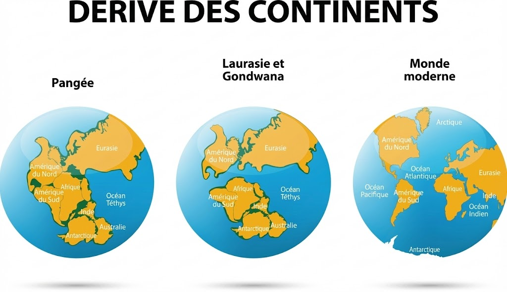
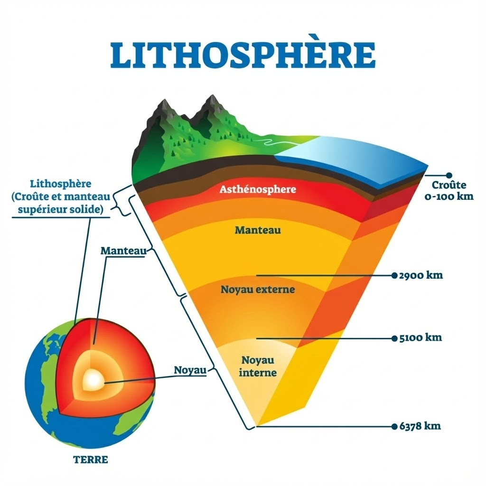
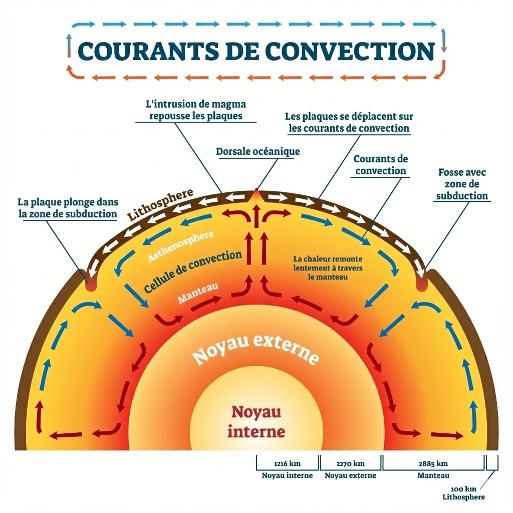
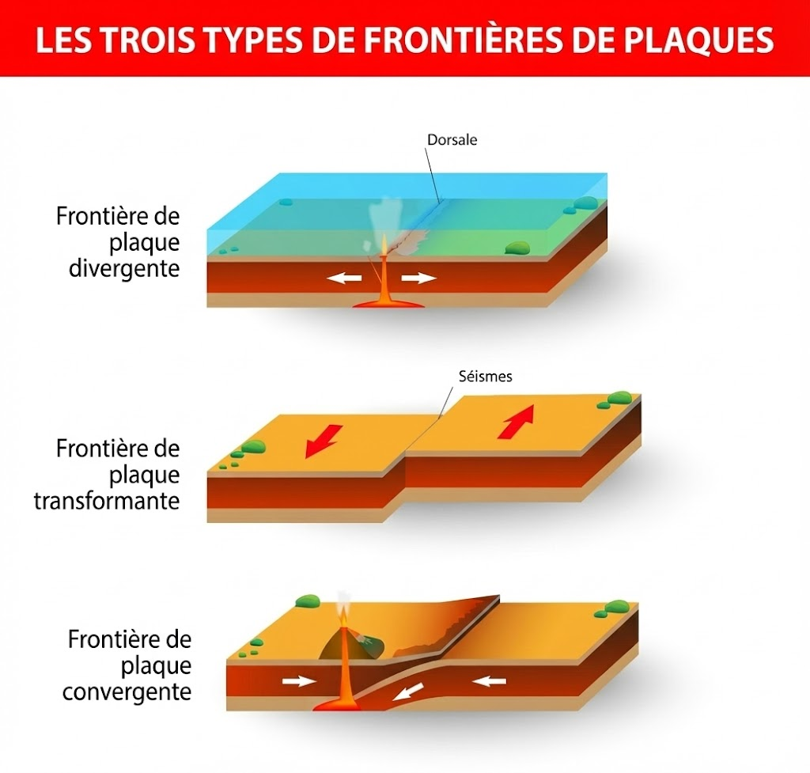
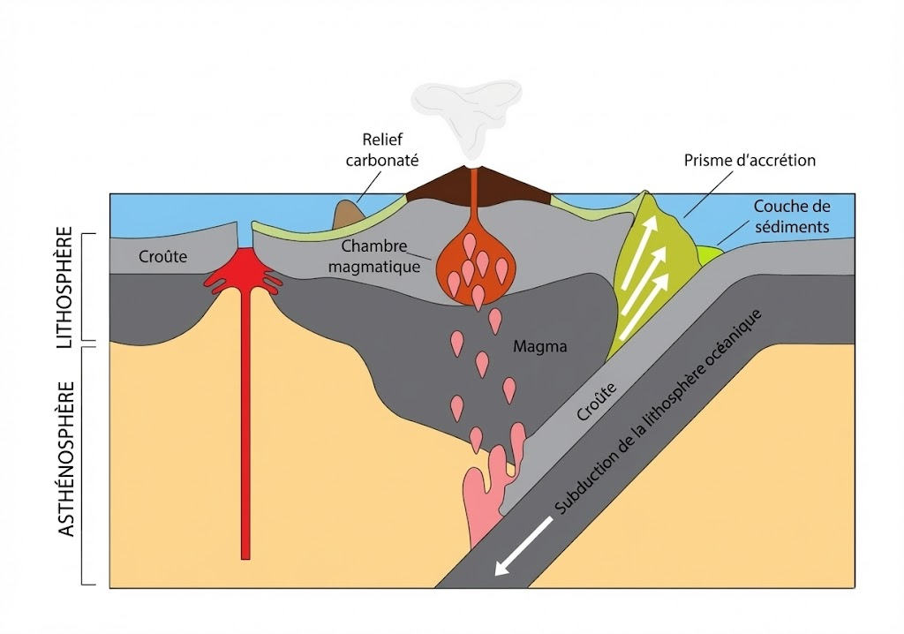
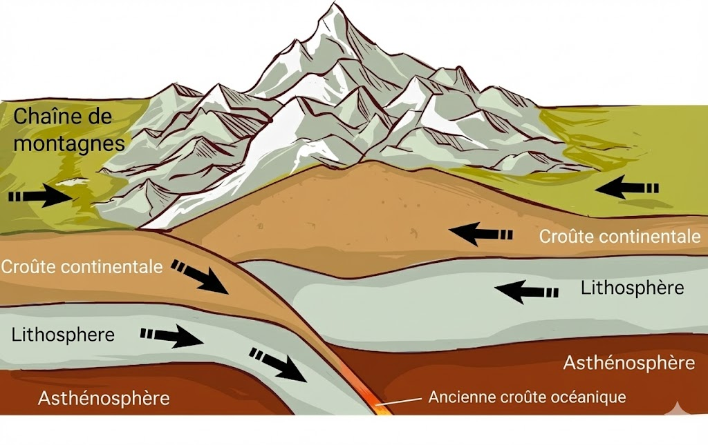

Avant, on pensait que la Terre était figée. Deux preuves majeures ont tout changé.
1. La théorie d'Alfred Wegener (1912)
Il affirme que les continents dérivent car :
🧩 Le Puzzle : La forme des continents (ex: Afrique et Amérique du Sud) s'emboîte parfaitement.

🦖 Les Fossiles : On retrouve les mêmes fossiles d'animaux et de plantes de part et d'autre de l'océan.
2. La preuve moderne : Le GPS 📡
Aujourd'hui, les satellites mesurent les mouvements au millimètre près !
Écartement (+2,4 cm/an) : Entre Montréal et La Rochelle.
Rapprochement (-7,2 cm/an) : Entre Nouméa et Tahiti.
2
🏗️ LA STRUCTURE - Le "Sandwich" Terrestre
La Terre est découpée en plaques. Voici les définitions exactes à connaître :
🟦 LITHOSPHÈRE (La Plaque)
C'est la couche de surface, rigide et cassante. Elle fait environ 100 km d'épaisseur sous les océans et 150 km sous les continents.
🔥 ASTHÉNOSPHÈRE (Le support)
C'est la couche située juste en dessous. Elle est composée de roches moins rigides (ductiles) et plus chaudes.

🧠 L'astuce de l'expert : Comment connait-on l'épaisseur ? Grâce aux ondes sismiques.
Elles vont VITE dans le dur (Lithosphère).
Elles RALENTISSENT dans le mou (Asthénosphère).
3
🔥 LE MOTEUR - Pourquoi ça bouge ?
Pourquoi ces immenses plaques se déplacent-elles ?
La Cause : La Terre produit de la chaleur interne.
L'Origine : Cette chaleur vient de la désintégration d'éléments radioactifs (comme l'Uranium) contenus dans les roches profondes.
L'Effet : Pour évacuer cette chaleur, la matière bouge en profondeur (convection), ce qui entraîne le déplacement des plaques en surface.

4
🎬 L'ACTION - Les 2 Mouvements
Tout se passe aux frontières des plaques. Il n'y a que deux scénarios possibles :
SCÉNARIO A : DIVERGENCE (Les plaques s'écartent) ⬅️ 🌊 ➡️
Lieu : Les Dorsales Océaniques.
Mécanisme : Les plaques s'éloignent. Du magma remonte pour combler le vide.
Résultat : Création de basalte (nouvelle lithosphère) → L'océan s'agrandit.
Risques : Volcans effusifs (lave fluide) et séismes superficiels.

SCÉNARIO B : CONVERGENCE (Les plaques se rapprochent) ➡️ 💥 ⬅️
Ici, deux fins sont possibles :
1. La SUBDUCTION (Océan contre Continent)
Définition : "Enfouissement dans l'asthénosphère" de la plaque océanique sous la continentale. Cela "provoque la fermeture de l'océan".
La Preuve Visuelle : Les foyers des séismes sont alignés selon un plan oblique (en diagonale) qui descend jusqu'à 600 km de profondeur.
Risques : Fosses océaniques, séismes profonds et volcans explosifs.

2. La COLLISION (Continent contre Continent)
Deux continents se rencontrent. Les roches se plissent.
Résultat : Formation de chaînes de montagnes (ex: Himalaya).

5
⚠️ LES RISQUES & LA PROTECTION
L'Homme ne peut pas empêcher la Terre de bouger, mais il peut gérer le risque.